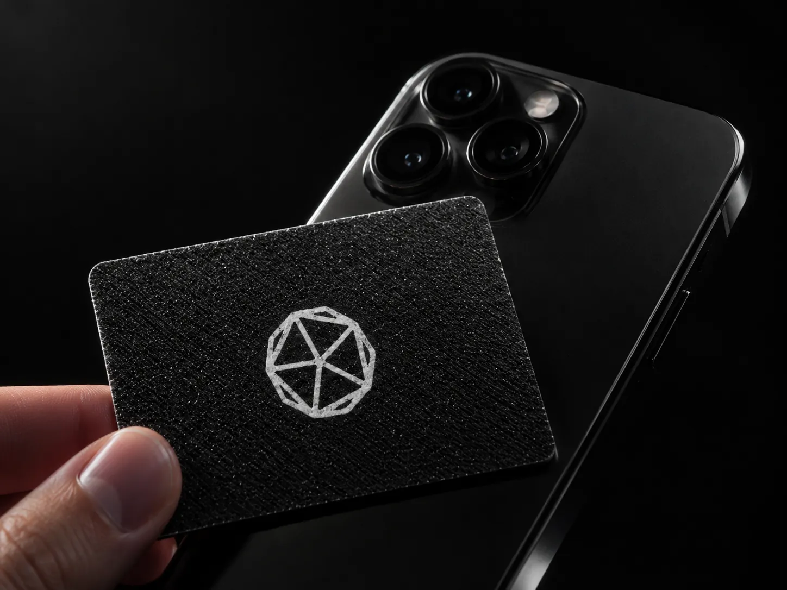
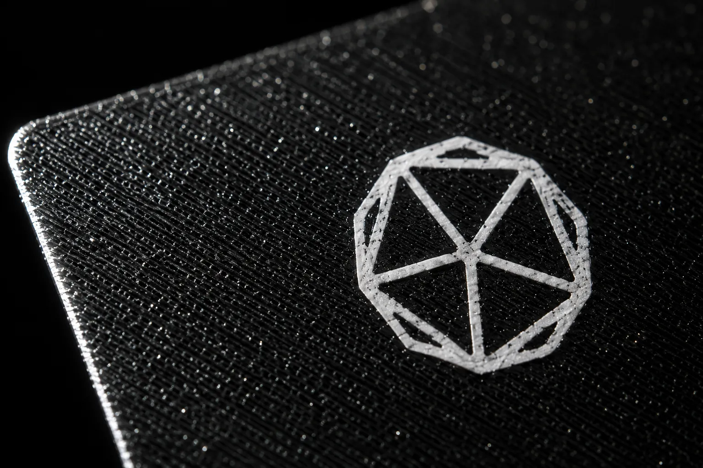

Zwei Karten, ein System
Digitale Visitenkarte
Für Selbstständige, Vertrieb, Außendienst und Handwerksbetriebe mit Kundenkontakt. Der Empfänger hält sein Handy an die Karte und sieht Name, Position, Firma, Telefon, E-Mail und Website. Ein Tipp auf „Kontakt speichern“, und alles steht im Adressbuch — richtig geschrieben, ohne Vertipper.
AnsehenBeispielkarte öffnenBewertungskarte
Für Friseure, Restaurants, Werkstätten, Physiotherapie und Kosmetik — überall dort, wo Gäste kommen und wieder gehen. Die Karte liegt an der Theke. Der Gast hält sein Handy dran und landet mit einem Tipp im Google-Bewertungsformular, nicht in der Suche.
Was immer dabei ist
Die Karte mit Chip, von mir beschrieben und auf zwei Geräten getestet.
Eine eigene Seite je Karte im einheitlichen Design. Kontaktdaten und Links trage ich ein.
Die Seite lädt nichts von fremden Servern, setzt keine Cookies und verfolgt niemanden.
Pakete
Einmal einrichten, kein Abo und keine monatliche Gebühr. Spätere Änderungen an Ihren Angaben sind nicht enthalten; die Karte selbst bleibt dabei unverändert, geändert wird die Seite dahinter.
Einzeln
Eine Karte
Für alle, die nach dem ersten Treffen im Adressbuch stehen wollen — nicht auf einem Zettel im Auto.
- Karte, Seite und QR-Datei — fertig eingerichtet und getestet.
- Ihre Daten trage ich nach Ihren Angaben ein.
- Sie bekommen den Link zur Freigabe, bevor der Chip beschrieben wird.
Ab 5
Karten
Für kleine Teams, die einheitlich auftreten wollen.
- Alle Leistungen der Einzelkarte
- Einheitliches Design über alle Karten des Teams.
- Eine Ansprechperson für alle Karten, eine Rechnung.
Ab 20
Karten
Für Betriebe, die das ganze Team ausstatten — und jeden neuen Mitarbeiter am ersten Tag gleich mit.
- Alle Leistungen der Einzelkarte
- Nachbestellung zu gleichen Bedingungen.
- Neue Mitarbeiter bekommen ihre Karte zum Eintritt.
Das ist nie dabei
Impressum und Datenschutzerklärung
Ich verlinke Ihre vorhandenen Seiten in der Fußzeile Ihrer Karte. Geschrieben oder rechtlich geprüft werden sie von mir nicht. Ich bin keine Rechtsberatung und darf keine sein.
Keine Vorab-Abfrage bei der Bewertungskarte
Manche Anbieter fragen erst „Waren Sie zufrieden?“ und leiten nur die Zufriedenen zu Google. Das verstößt gegen Googles Richtlinien und kann Ihr Profil kosten. Bei mir führt die Karte alle zum selben Formular.
Ihre Karte veraltet nicht
Probieren Sie es am Handy
Eine echte Karte, wie sie ein Kunde bekommt. Öffnen Sie den Link am besten mit dem Telefon — dann funktioniert auch das Speichern ins Adressbuch.

Prüfen Sie es selbst nach

Ladezeit
Die Seite ist da, bevor Sie zu scrollen anfangen. Keine fremden Skripte, keine schweren Bilddateien.
Auf dem Handy
Drehen Sie das Gerät — alles bleibt lesbar.
Kontakt speichern
Ein Klick, und Ihre Kontaktdaten stehen im Adressbuch Ihres Kunden.
Keine fremden Verbindungen
Die Seite ruft keinen fremden Server auf. Nichts wird nachgeladen, nichts mitgeschrieben.
Vier Schritte bis zur fertigen Karte
Von der ersten Nachricht bis zur Karte in Ihrer Hand vergehen in der Regel wenige Tage.
Daten sammeln
Ein kurzes Formular oder ein Telefonat: Name, Position, Nummer, E-Mail, Links, gewünschte Seitenadresse.
Sie bekommenDie Zusammenfassung Ihrer AngabenSeite bauen
Ich lege Ihre Seite an und schicke Ihnen den Link. Sie sehen genau das, was Ihre Kunden später sehen.
Sie bekommenDen Link zur FreigabeKarte bespielen
Erst nach Ihrer Freigabe beschreibe ich den Chip. Getestet wird mit zwei Geräten, iPhone und Android.
Sie bekommenDie beschriebene KarteÜbergabe
Karte, QR-Datei für den Druck und eine kurze Einweisung: wie man sie hinhält, was bei Handys ohne NFC passiert.
Sie bekommenKarte, QR-Datei und Anleitungأمانة
Amana · das Anvertraute
Amana ist arabisch und heißt: das Anvertraute. Gemeint ist etwas, das jemand einem anderen überlässt, weil er ihm zutraut, es zurückzugeben wie vereinbart.
Eine Visitenkarte ist so eine Sache. Sie geben mir Ihre Daten und damit einen Teil Ihres Rufs. Meine Aufgabe ist es, beides sicher zu verwahren und daraus etwas zu machen, das Ihren Vorstellungen entspricht — und das am Ende Ihnen gehört. Ihre Daten sind mir geliehen, nicht übergeben. Ohne Ihre Zustimmung gebe ich sie an niemanden weiter.
Ich sollte das offen sagen: Amana gibt es seit 2026, und ich arbeite allein. Deshalb nehme ich wenige Projekte gleichzeitig an, und freue mich über jede Rückmeldung zu meiner Arbeit.
Sehen Sie es sich
am Handy an
Öffnen Sie oben die Beispielkarte mit dem Telefon — das ist genau das, was Ihre Kunden sehen. Wenn es passt, schreiben Sie mir, welche Karte Sie brauchen. Sie gehen damit keine Verpflichtung ein.
Karte anfragenOder direkt an kira.moewes@gmail.com